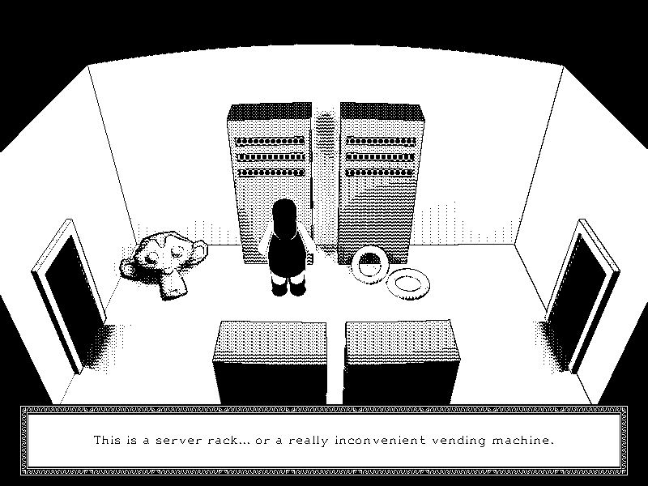

SideChannel (A Game)
I'm working on a point-and-click adventure game with the working title "SideChannel." Its called SideChannel for a reason, the game must be played partly with an SSH client.
To play the game you'd have two windows open at all times, one is the actual point-and-click game (probably made with SDL) and the other is an SSH client that is connected to a port opened by the game (you'd connect to with something like ssh username@localhost:8888).
The game isn't much yet, both in code and in story, but I have some big ideas. The main idea of the game is that the world you explore is isomorphic to a linux computer.
For example: there might be a room in the world that represents the folder /bin. The room would be filled with objects, all of which correspond to unique binaries on the system, like a stuffed cat literally being the cat command. A puzzle might involve painting a part of these objects blue, which would be equivalent to running chmod -r -w +x on them (remember the colour blue in 3-bit rgb is 0b001). In this way the character in the point-and-click is performing root commands that the SSH client doesn't have permission to do, hence the name "SideChannel."
As far as story goes, the only idea I have is that the character is a posthuman living in a posthuman world. More specifically, their "domain" has been disconnected from the wider network, effectively stranding them and their neighbors in a bubble universe (think netsplit). Finding out why this happened would form the bulk of the game.
This game would take a lot of work, not only the point-and-click side (which requires assets, game logic, and a good story) but also the shh side (which requires a working shell, a virtual file system, and enough fidelity to feel like linux).
For the point-and-click side I have a very clear idea of its aesthetics. I want it to look like Cyan's The Manhole, strictly black and white with cool dithering patterns.
{kind=link}
Here is a proof of concept for the style:

The screenshot was made in blender, the pattern the compositor uses to dither the image is decided by material index. For the actual game I'm either going to render each scene in blender or use OpenGL with fancy pixel shaders.
For the shell part of the game there are three options:
- Literally have a linux box running in a hardware virtualizer like QEMU.
- Implement all shell commands in game logic. The binary files on the virtual filesystem would just be dummy files.
- Invent a virtual CPU architecture and re-write all shell commands for it, including the shell itself. The game logic just mimics the kernel.
The list is ranked from easiest to hardest. They say every great programmer is lazy. Apparently I'm not a great programmer. I opted for number 3.
What I have can be found in the game's github repo. In short, I have written up a spec for a mips-like 16-bit CPU and have implemented all of its instructions in c. I also have a rudimentary assembly compiler for the CPU which is written in perl. The executable format for the computer is just bytecode with the initial values for the instruction and stack pointer in a 4 byte header.
There is a dedicated syscall instruction. When the emulator sees a syscall instruction it calls a function called sc_syscall which simulates what a posix kernel would do. This means I don't have to write an entire kernel for the 16-bit processor.
The only implemented syscalls are fork, write, read, and exit. Before progressing further I have implement a virtual filesystem for all these system calls to work with. I also need to implement the SSH server so I can make tty devices functional.
Stay tuned for updates!